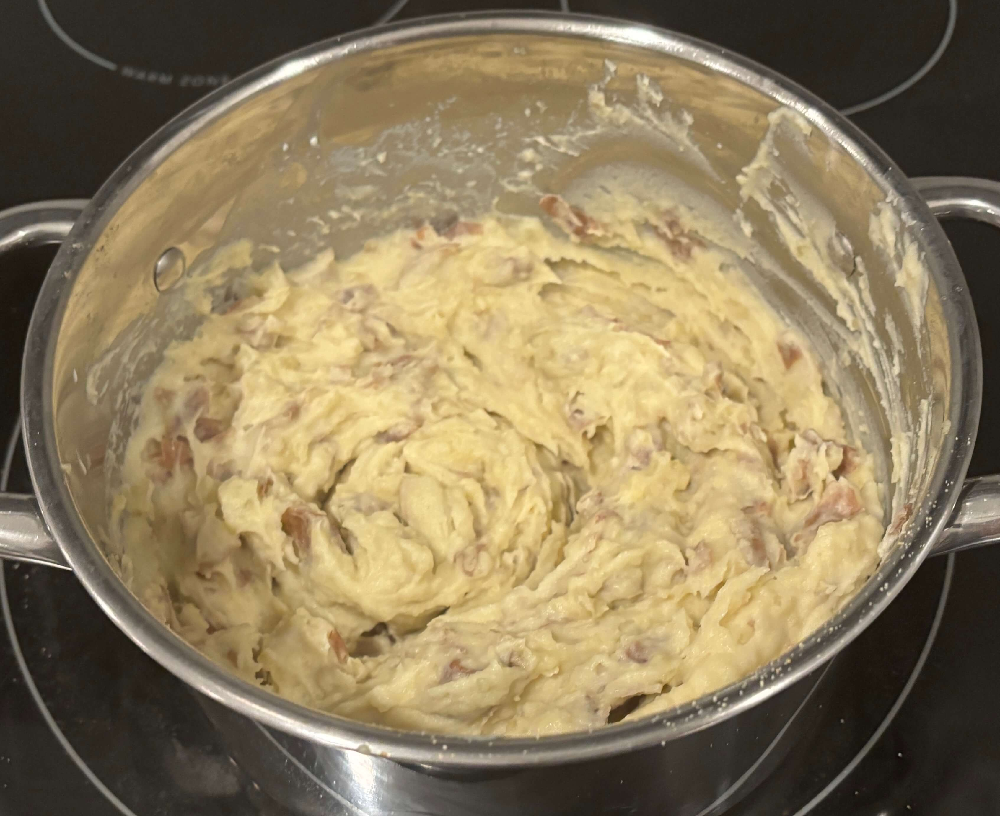

Home
Mashed Potatoes

4 servings
Prep: 10 min, Cook: 15 min
Ingredients
- 2 lbs Yukon gold potatoes peeled and cut into pieces (russets or red bliss can be substituted)
- ½ cup milk room temperature
- 4 tablespoon Unsalted butter softened to room temperature
- 1 teaspoon kosher salt to taste (if you use table salt, start with ½ teaspoon and adjust to taste)
- ¼ teaspoon white pepper to taste (or black pepper)
- 1 teaspoon garlic powder
Steps
- Wash the potatoes to remove any dirt or debris. Then peel the potatoes to remove the skins. *When I use red bliss, I sometimes leave the skins on. This is a personal preference.
- Cut the potatoes in half and then half again two more times. *This will help in the speed of the cooking process as the smaller pieces will cook faster.
- As you cut the potatoes place them in a pot large enough to cook them, filling the pot with cold water. Drain the water and fill the pot back up to one inch above the cut potatoes with cold water so they are fully submerged. *Add a half a teaspoon of salt to the water before cooking the potatoes.
- Place the saucepan on the stove top over medium high heat and let the potatoes come to a boil.
- Cook the potatoes for 15-20 minutes until they are fork-tender.
- Carefully drain the water and remove the potatoes from the pot and place them in a large mixing bowl.
- Add the butter and milk to the mixing bowl with the potatoes and using an electric hand mixer or potato masher, mix the ingredients together until they start to get smooth.
- Once the potatoes have started to form a creamy texture add the seasonings and continue to mix until the potatoes have reached a smooth and fluffy consistency. Add more milk if the potatoes aren't at your desired consistency.
- Taste and reseason with salt and pepper as needed. Be careful not to over whip the potatoes, it will not make them creamier, it will make them starchy and turn from fluffy to gummy.
- Top the potatoes with a pat of butter and serve.
Tips
- Potatoes can be peeled and cut ahead of time. Store whole peeled potatoes or cut potatoes in cold water for up to 24 hours before cooking. Water must be completely covering the potatoes.
- Start with cold water : This will help the potatoes cook more evenly. If you start with hot or boiling water, the outsides of the potatoes cook faster and soften while the middles are still hard. This will cause the outsides to overcook and get starchy.
- Yukon Golds are the best potato for any mashed potato recipe. Yukon gold potatoes have a creamy texture that aren't in other varieties. Russet potatoes and Idaho potatoes have a high starch content making them excellent choices. Waxy varieties like Red Bliss and fingerling are not the best choice when making mashed potatoes. These varieties have a low starch content, and won't absorb dairy as well as starchier varieties